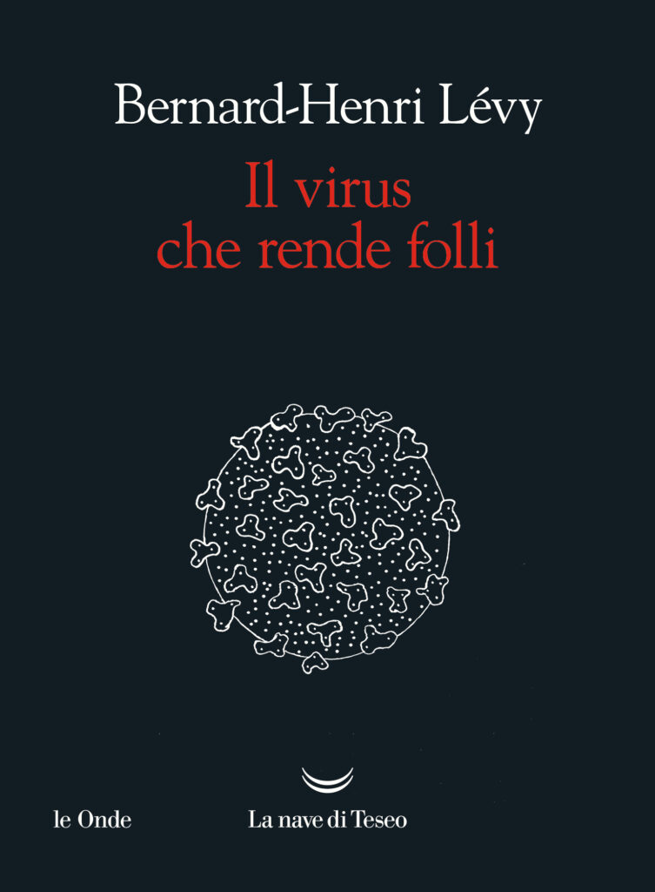
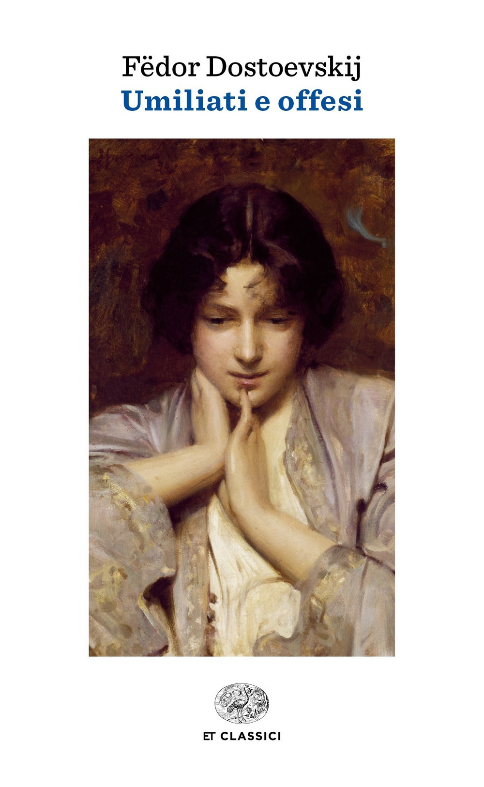

25:21 · 3 OPERE
Sul discorso di Andrea Bocelli in cui si è sentito "umiliato e offeso".
Il filo del discorso
Il video commenta per passaggi l’intervento di Andrea Bocelli sulle restrizioni durante la pandemia. Caldarella si concentra sul passaggio dall’accettazione delle indicazioni delle autorità alla formulazione di dubbi personali e sulle reazioni del pubblico. La discussione chiama in causa media, famiglia e scuola e propone confronti con Orwell e Galileo. Il riferimento a Lévy e l’associazione con Umiliati e offesi di Dostoevskij accompagnano il tema della libertà e del rapporto fra diritto e giustizia. Il finale insiste sulla lettura, sul dialogo e sulla ricerca di un confronto trasversale. Le valutazioni sanitarie e giuridiche del commentatore sono distinte dalla ricostruzione dell’intervento del cantante.
I libri nel discorso

1984
Identificazione probabile
Copertina: Newton Compton · edizione illustrativa
Winston Smith e il potere di imporre ciò che si deve affermare rinviano probabilmente al romanzo; titolo non annunciato qui.
Passaggio 6:43 ↗ · Fonti e libro ↗
Il virus che rende folli
Copertina: La nave di Teseo · Le onde · 2020
Immagine autentica dell’opera, controllata visivamente; l’edizione di riferimento non è attribuita al filmato.
Bernard-Henri Lévy e il libro sul virus che rende folli sono richiamati; Caldarella dichiara di non averlo letto.
Passaggio 15:40 ↗ · Fonti e libro ↗
Umiliati e offesi
Copertina: Einaudi · Einaudi tascabili Classici · 2018
Immagine autentica dell’opera, controllata visivamente; l’edizione di riferimento non è attribuita al filmato.
Caldarella nomina autore e titolo, proponendo un’allusione nelle parole di Bocelli; non è accertata l’intenzione del cantante.
Passaggio 18:45 ↗ · Fonti e libro ↗Minutaggi ricavati da testi automatici, da riascoltare. Le identificazioni probabili sono segnalate accanto ai libri.